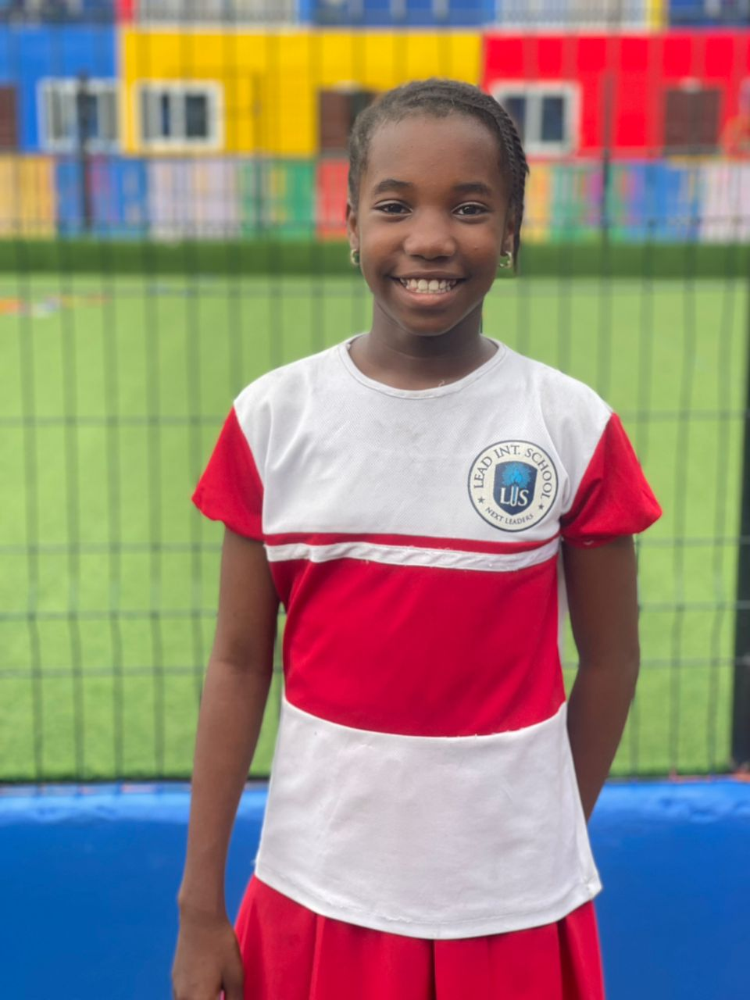
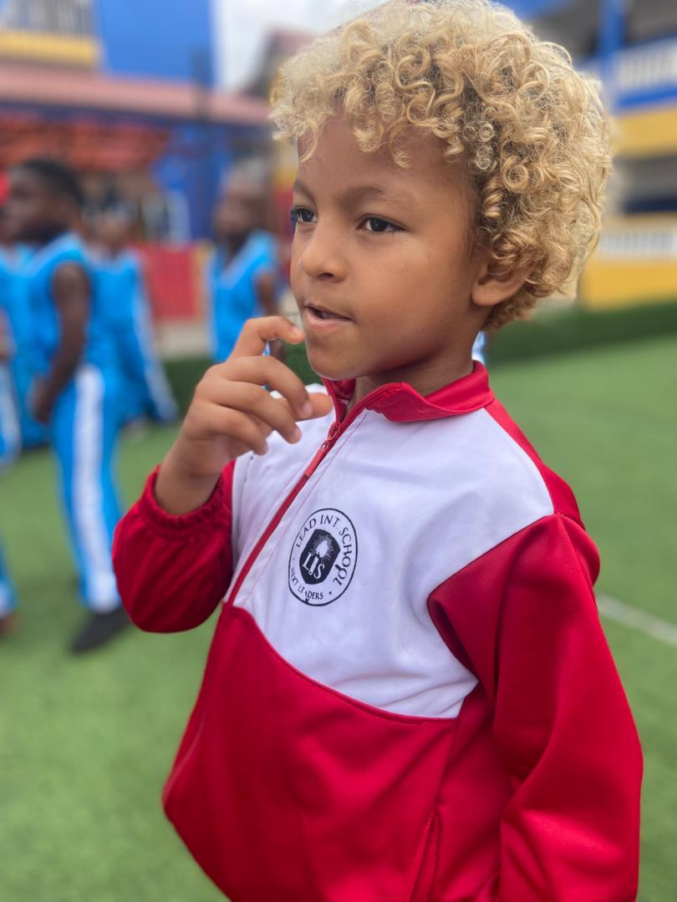
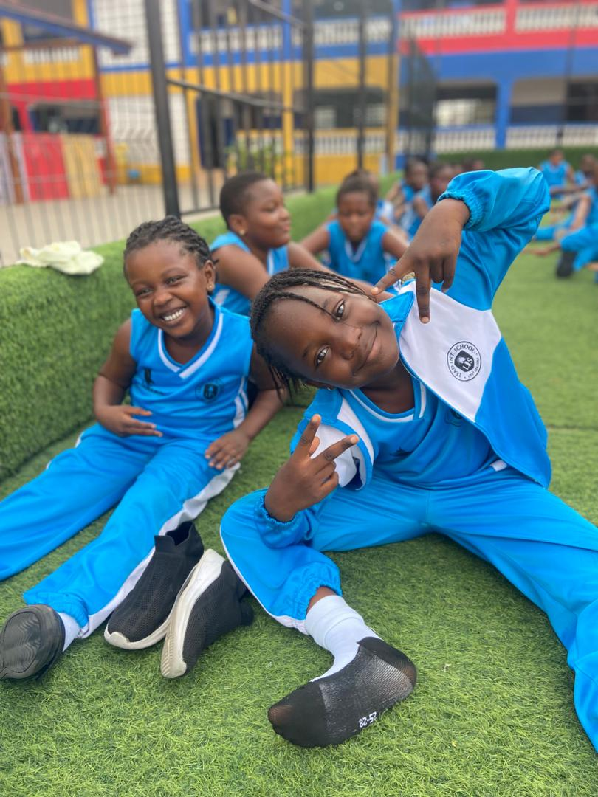
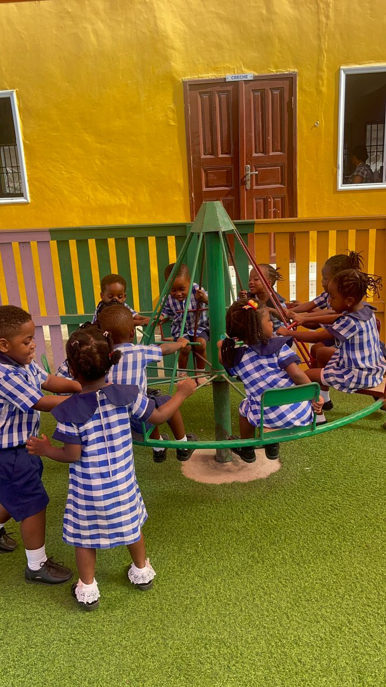

The preschool has two main departments managed by their respective able heads. They are the Crèche and Nursery, and Kindergarten. Caregivers supervise play for babies and young toddlers. They give them free play time. They are given attentive care and monitor the children under their care. The child’s needs are catered for – changing time, potty training, meals, nap time etc. The children are taught how to socialize with others. They learn how to make friends and share. Caregivers/Facilitators ensure that the children are safe and well behaved. The abilities and skills of the children are nurtured. Independence, self-control as well as co-operation are also nurtured. Scheme of learning is developed to suit each developmental stage. Individual differences of each child are catered for as each child is unique. Each child learns at his/her own pace. As early as 6:00 a.m., caregivers are in to welcome the children. After school care is provided at a minimum fee. The Department is staffed with experienced and skilled facilitators who enjoy the work they do and treat the children as their own. Children are happy with their caregivers/facilitators. .
Our preschool provides a safe, loving, and colorful environment designed to help children develop academically, socially, emotionally, and creatively. We focus on play‑based learning where every child explores, discovers, and grows at their own pace.



